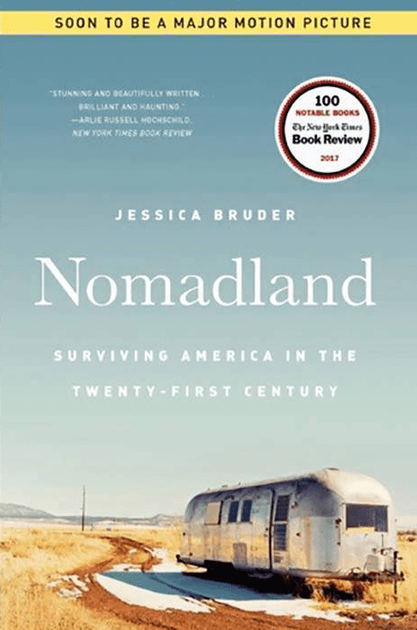

MAR
Jessica Bruder’s "Nomadland," chronicles the growing community of transient older Americans who have taken to the road in search of seasonal work. The nomads Bruder followed were usually workers who did not completely recover from the 2008 Recession. Without enough saved for Social Security, and unable to pay off their mortgages, they moved their lives into RVs and trailers, congregating in camps stretching from North Dakota to California to Texas.
The latest selection for our “Now Read This” book club, Jessica Bruder’s “Nomadland,” documents a growing phenomenon in the country — a "wandering tribe" of seasonal workers. It has inspired a new movie of the same name. The film was the big winner at the British Academy Film Awards, and has multiple Oscar nominations. Jeffrey Brown has the latest for our ongoing arts and culture series, CANVAS.
Bruder, a journalist, spent three years speaking to folks on the road to write the book, and lived briefly as a nomad herself. She joined PBS NewsHour’s Jeffrey Brown on Thursday to answer your questions about her reporting.
Author Jessica Bruder will join PBS NewsHour’s Jeffrey Brown on Thursday, April 15 at 7:00 p.m. ET, to answer your questions about her book, "Nomadland,"
Here are questions to help guide your discussions as you read the book over the next month.
The March and April selection for Now Read This is Jessica Bruder's “Nomadland,” which chronicles the growing community of transient older Americans who have taken to the road in search of seasonal work.
Journalist Jessica Bruder says she’s seen a lot of great writers’ advice over the years, but one trick that she particularly likes “wasn’t devised for writers.”
This satirical novel centers around Willis Wu, an Asian actor who is typecast to fill Hollywood stereotypes in television such as “Generic Asian Man” or “Background Oriental Making a Weird Face.” He has a small part on a cop show called “Black and White,” but dreams of one day playing “Kung Fu Guy,” which he sees as the “pinnacle” role he could be offered.
Here are questions to help guide your discussions as you read the book over the next month.
Our February 2021 pick for Now Read This, the PBS NewsHour’s book club with The New York Times, is Charles Yu’s “Interior Chinatown,” which won the 2020 National Book Award for fiction.
Yu discusses how the 2016 election made him reconsider the framing of the American dream — and thus served as the inspiration for “Interior Chinatown” — plus some valuable advice his wife gave him while he was writing the book.
“Trick Mirror: Reflections on Self-Delusion,” is a collection of nine essays examining American life under late capitalism by Jia Tolentino. Her cultural criticism draws heavily on the internet and the myriad ways it shapes our lives.
The January pick for our “Now Read This” book club was a book of essays exploring many aspects of American culture through the prism of the internet and social media. At age 32, author Jia Tolentino has gained acclaim as one of its most astute observers. She’s a also a staff writer for The New Yorker and “Trick Mirror” is her first book. Jeffrey Brown spoke to Tolentino to learn more.
Here are questions to help guide your discussions as you read the book over the next month
Our January book club pick for Now Read This, the PBS NewsHour’s book club with The New York Times, is Jia Tolentino’s "Trick Mirror: Reflections on Self-Delusion."
“That day freed me from one of the worst traps in both life and writing, where you talk or think about something for so long that you neglect your freedom to just go out and give it a try,” Tolentino said. Read more from Tolentino on how she spent time in solitude while working on “Trick Mirror,” as well as which works form her personal literary canon.
“Severance” follows Candace Chen, a millennial with a corporate job in book publishing who finds herself among the last survivors of a devastating virus in a largely empty New York City.
The author of our December pick for the NewsHour-New York Times book club answered questions submitted by readers about her novel.
When writing "Severance," author Ling Ma drew inspiration from various sources, including several films.
"I thought I could somehow bridge the two," Ling Ma recently told the PBS NewsHour of her novel "Severance." "What if Terrence Malick directed a zombie B movie and this was the voiceover? Would that be in bad taste?"
Here are questions to help guide your discussions as you read the book over the next month.
Our December book club pick for Now Read This, the PBS NewsHour’s book club with The New York Times, is Ling Ma’s “Severance,” a satirical novel that takes place during a global pandemic.
“In the beginning, the writing routine sprang from the rhythms and trappings of the office, even as fewer employees showed up and it became deserted,” Ma recently told the PBS NewsHour. After her office closed, she continued writing as she lived off unemployment benefits, one freelance assignment and her own severance package. Ma shares more on her writing routine and sources of inspiration.
The verse novel chronicles 15-year-old Xiomara Batista’s struggle to adapt to the physical and emotional changes that come with adolescence, and how she finds an outlet in slam poetry.
Our November pick for the NewsHour-New York Times book club, "Now Read This," is "The Poet X" by Elizabeth Acevedo. She spoke to Jeffrey Brown about finding her voice through poetry and why she wrote a novel in verse.
“I wanted to make sure that emotionally, tonally, and in terms of the language of experience of the character that I didn’t stray from the heart of the story in trying to impress readers with my verse,” she wrote. You’ll find more insight on “In Translation” in Acevedo’s annotations.
Here are questions to help guide your discussions as you read the book over the next month.
Our November book club pick for Now Read This, the PBS NewsHour’s book club with The New York Times, is Elizabeth Acevedo’s “The Poet X”.
Acevedo said the practice of “reaching closure in poems” helped her realize when “The Poet X” was finished, as she “could sense when the project had said all I needed to say.” Hear more from Acevedo , including on her routine and favorite childhood books.
In “Helping Children Succeed,” Tough delves into how teachers and caregivers can foster environments where children develop these character traits, and looks at examples of how schools across the United States are working to do so.
The coronavirus pandemic has upended American life. What are its consequences for the education realm, which is already characterized by major inequalities? Tough joins Jeffrey Brown to discuss troubling trends in K-12 and higher education.
When Paul Tough first began reporting on the skills that help children succeed both in and out of the classroom, he drew upon an already robust body of research on the subject.
What should teachers do to help their students succeed? That was a central question that journalist Paul Tough was trying to answer when he came across an innovative study in 2013.
Here are questions to help guide your discussions as you read the book over the next month.
Our October pick for Now Read This, the PBS NewsHour’s book club with The New York Times, is Paul Tough’s “Helping Children Succeed”, which looks at the unique challenges that children dealing with adversity face when they enter the classroom, and how teachers and policymakers can work to improve these students’ chances at success.
When Paul Tough was first starting out as a self-described “young and uptight” reporter, he found it “distressingly hard to ask people questions that struck me as potentially awkward or personal.” Tough shares Ira Glass’ advice and some favorite reads.
“Beaten Down, Worked Up,” which traces the history of the labor movement in the United States, and considers the factors that led to a significant decline in worker bargaining power in recent decades.
Steven Greenhouse, author of our September pick for the NewsHour-New York Times book club, Now Read This, joins Jeffrey Brown to answer reader questions about “Beaten Down, Worked Up.”
Hear from Greenhouse about his reporting, as well as King’s lesson that “all labor that uplifts humanity has dignity,” in an annotated excerpt from the book.
“I try to keep whatever I write interesting and informative throughout, and hopefully at times it’s even captivating and entertaining,” Greenhouse said. More on his writing routine and sources of inspiration.
Here are questions to help guide your discussions as you read the book over the next month. Greenhouse will answer reader questions about “Beaten Down, Worked Up” on the PBS NewsHour at the end of the month.
Steven Greenhouse’s “Beaten Down, Worked Up” traces the history of the labor movement in the United States, and considers the factors that led to a significant decline in worker bargaining power in recent decades.
Steven Greenhouse, author of “Beaten Down, Worked Up,” recommends these books for a sweeping history of labor in the U.S., as well as stories of specific campaigns and leaders.
A fast-paced thriller about a young man whose discovery upon his father’s death of his involvement in a vast crime syndicate leads the protagonist on a journey to tie up loose ends with his father’s former associates back in China.
"There is a feeling unavailable to people who were born in the United States: None of us can know what it’s like to come from a country that’s not the richest and most powerful country in the world," writes "Beijing Payback" author Daniel Nieh.
Daniel Nieh, author of our August pick for the NewsHour-New York Times book club, Now Read This, joins Jeffrey Brown to answer reader questions about “Beijing Payback.”
Nieh told the PBS NewsHour that San Gabriel Valley — which is home to one of the largest Chinese communities in the United States — and more specifically San Dimas, was “an irresistible choice” for the setting of Victor’s sheltered childhood.
Here are questions to help guide your discussions as you read the book over the next month.
Our August book club pick for Now Read This is Daniel Nieh’s “Beijing Payback”
As a Chinese-English language translator, writer Daniel Nieh is well accustomed to thinking in two different languages and straddling the customs and cultures of both East and West. While living in Beijing in 2009, he was inspired to write a page from the perspective of a Chinese-American football player who also spoke a different kind of language.
Our July book club pick for Now Read This, the PBS NewsHour’s book club with The New York Times, is poet Claudia Rankine’s “Citizen: An American Lyric.” It’s a collection of essays, images and poetry that consider how individual and collective expressions of racism add up and play out in our contemporary society.
Claudia Rankine, author of our July pick for the NewsHour-New York Times book club, Now Read This, joins Jeffrey Brown to answer reader questions about “Citizen: An American Lyric.”
In her book “Citizen,” the poet Claudia Rankine aims to show readers how Black people experience racism in their everyday lives. And to help tell that story, she reached out to visual artists.
Here are questions to help guide your discussions as you read the book over the next month
Our July book club pick for Now Read This is Claudia Rankine's "Citizen: An American Lyric"
Rankine writes about police brutality, as well as many of the other forms of racism that Black Americans encounter in their everyday lives. She told the NewsHour she was prompted to consider these themes in her work after Hurricane Katrina devastated Black communities in 2005.
Set in 1986, the novel follows Marie Mitchell, a young black officer with the FBI who joins a task force aimed at undermining Thomas Sankara, the then-president of Burkina Faso. When she finds herself involved in a plot to overthrow Sankara, she begins to reconsider what it means to be a good American and a spy.
Wilkinson talks about other sources of inspiration, and how she came to write “American Spy” as her debut novel.
Here are questions to help guide your discussions as you read the book over the next month.
Our June book club pick is a thrilling story about an intelligence officer who navigates love, family and duty in the years leading up to the end of the Cold War.
Lauren Wilkinson’s “American Spy” is a contemporary take on a classic spy novel, but it originally started as a graduate school assignment: She was prompted to write a short story about the suburbs, and chose Connecticut as the setting.
The Street is a novel published in 1946 by African-American writer Ann Petry. Set in World War II era Harlem, it centers on the life of Lutie Johnson. Petry's novel is a commentary on the social injustices that confronted her character, Lutie Johnson, as a single black mother in this time period.
Ann Petry’s “The Street” was the first novel by a black woman to sell more than a million copies. But over the years, not all of its covers conveyed the complex themes of race and class.
Author Tayari Jones wrote the introduction to a new edition of Ann Petry's 1946 novel "The Street," our May pick for the NewsHour-New York Times book club, Now Read This. Jones joins Jeffrey Brown to answer reader questions about the "The Street," and Jeff announces the June book selection.
In Ann Petry’s 1946 novel “The Street,” which chronicles an African American woman’s pursuit of the American dream, the main character’s predicament is not unlike that of many workers today.
Here are questions to help guide your discussions as you read the book over the next month. You can also submit your own questions for Tayari Jones, author of an “American Marriage,” on our Google form. Jones will answer reader questions about the enduring relevance of “The Street” which was originally published in 1946, on the PBS NewsHour at the end of the month.
“The Street” by Ann Petry is the May pick for Now Read This, the PBS NewsHour's book club with The New York Times.
Jones, who is the author of “An American Marriage” and several other novels, writes with a typewriter and keeps a couple of pens filled at her desk most of the time. She shares more on her writing routine, as well as the books she’s drawn inspiration from over the years, below.
Set on Russia’s Kamchatka Peninsula, a region where social and ethnic tensions have long shaped the lives of the residents there, Phillips’ novel follows a cast of characters who are connected by the crime. The mysterious disappearance of the Golosovsky sisters one summer day ignites an onslaught of media attention that lays bare the broader tensions, particularly for women who feel their struggles have not been given equal notice.
Julia Phillips, author of our April pick for the NewsHour-New York Times book club, Now Read This, joins Jeffrey Brown to answer reader questions on “Disappearing Earth,” and Jeff announces the May book selection.
More than a decade ago now, I started to dream of writing a book set in Russia’s Kamchatka Peninsula. That region, 4,200 miles east of Moscow, is one of the most beautiful places in the world. It hangs off the edge of the country into the Bering Strait. It’s packed with volcanoes, geysers and natural wonders – I couldn’t wait to go.
“The whole book rests on this story one sister tells another about a town that vanished, swept away by a giant wave,” Phillips wrote. “That’s our chunk of disappearing earth.”
Here are questions to help guide your discussions as you read the book over the next month.
Our April book club pick for Now Read This, the PBS NewsHour’s book club with The New York Times, is Julia Phillips’ “Disappearing Earth,” a novel about a community’s reckoning with the sudden disappearance of two young girls.
Phillips shares her writing routine, sources of inspiration, and the process of writing “Disappearing Earth”
After submitting her DNA for analysis to an ancestry website in 2016, Dani Shapiro received a piece of news that rocked her to the core: The man who had raised her, her now-deceased father, was not her biological kin.
Dani Shapiro, author of our March pick for the NewsHour-New York Times book club, Now Read This, joins Jeffrey Brown to answer reader questions on "Inheritance," and Jeff announces the April book selection.
Years after her dad died, Dani Shapiro found out he was not her biological father. But she had long sought to better understand him through her writing before that moment.
Our March 2020 pick for the PBS NewsHour-New York Times book club is Dani Shapiro’s “Inheritance.”
Our March book club pick for Now Read This, the PBS NewsHour’s book club with The New York Times, is Dani Shapiro’s “Inheritance”
Our March pick for the PBS NewsHour-New York Times book club “Now Read This” is Dani Shapiro’s “Inheritance.” Become a member of the book club by joining our Facebook group, or by signing up to our newsletter. Learn more about the book club here. For Dani Shapiro, finding out that the father who had raised her was not, in fact, her biological dad “was such an impossible thing to learn, in midlife.” The unexpected results
“American Prison” draws from Bauer’s own experience working undercover as an entry-level prison guard at Louisiana’s Winn Correctional Center while on assignment as a senior reporter for Mother Jones. His book weaves together his own stories of working with Winn corrections officers and prisoners, along with the history of for-profit incarceration in the U.S.
"American Prison" author Shane Bauer highlights a few key moments in the history of prison-as-profit in America, drawing from research he conducted for the book.
“Power struggles in prison are sometimes overtly violent, but mostly they are psychological and subtle,” he said.
Here are questions to help guide your discussions as you read the book over the next month.
“American Prison” draws from Bauer’s own experience working undercover as a prison guard at Louisiana's Winnfield Correctional Center while on assignment as a senior reporter for Mother Jones.
“It will make your writing much better in the end,” says Shane Bauer.
Terese Marie Mailhot’s memoir traces her family’s history on the Seabird Island Indian Reservation in British Columbia, Canada. Her collected essays address the trauma experienced by indigenous people across generations, as well as the author’s own struggles with mental illness.
Terese Marie Mailhot, author of our January pick for the NewsHour-New York Times book club, Now Read This, joins Jeffrey Brown to answer reader questions on “Heart Berries,” and Jeff announces the February book selection.
“Photographs informed parts of the book my memory could not retrieve,” said Terese Marie Mailhot.
The stories I wrote about him always had murky endings, where you could tell the protagonist had unfinished business with him, and that she had been hurt,” said the author of "Heart Berries."
Here are questions to help guide your discussions as you read the book over the next month.
We’re excited to announce our first book club pick for the new year: Terese Marie Mailhot’s “Heart Berries.”
"I found myself writing the book professors wanted me to write," said author Mailhot, before she decided to strip her "fiction for the truth." Leaving expectations behind, she wrote a memoir, "Heart Berries," because, she said, you have to deal with your history "or it will consume you."
The novel that reimagines the story of Circe, a lesser-known and yet much-reviled goddess and witch from the Greek epic poem "The Odyssey."
Here's a small sampling of the goddess' rich visual history, from ancient Greece to contemporary America.
Madeline Miller, author of our December pick for the NewsHour-New York Times book club, Now Read This, joins Jeffrey Brown to answer reader questions on “Circe,” and Jeff announces the January book selection.
Author Madeline Miller reimagined a reviled minor goddess from the "Odyssey" into a powerful figure who finds herself through hard work and dedication.
Author Madeline Miller reimagined a reviled minor goddess from the "Odyssey" into a powerful figure who finds herself through hard work and dedication.
Here are questions to help guide your discussions as you read the book over the next month. She will answer reader questions on the PBS NewsHour broadcast at the end of the month.
We’re excited to announce our December pick for “Now Read This,” our book club in partnership with The New York Times. It’s Madeline Miller’s “Circe,” a novel that reimagines the story of a lesser-known and yet much-reviled goddess and witch from the Greek epic poem “The Odyssey.”
Before she was the author of the best-selling novel "Circe," Miller believed that she had to write around the clock. Now, she says, “Discipline is important, but so is taking a breath and looking around."
In a review of the book in The New York Times Book Review, author Barbara Kingsolver writes that "The Overstory" is "a delightfully choreographed, ultimately breathtaking hoodwink" that seems to be a book about people but is actually about trees -- and reimagining how we relate to them.
Powers shares his bibliography for “The Overstory” – 26 books that contain a wide range of information about trees, from how the American Chestnut disappeared to histories of radical forest activism.
Powers annotates the beginning of the first chapter of “The Overstory,” whose first line, about chestnuts, is adapted from the journal of Henry David Thoreau.
"The Overstory" is our November book club for the PBS NewsHour-New York Times book club, "Now Read This"
"The Overstory" is a novel about trees, activism and our relationship to the natural world.
Powers shares how nature has changed how he writes and lives, the importance of being present and paying attention, and what the book “Harold and the Purple Crayon” means to him.
Winkler, a professor of law at University of California, Los Angeles, argues that the question of constitutional rights for corporations began long before the controversial Citizens United decision. (In 2010, the Supreme Court ruled the government could not keep corporations or unions from spending money to influence elections.)
Long before there were calls to break up Silicon Valley’s biggest companies, long before the Supreme Court’s Citizens United decision in 2010, corporations had gained significant rights and powerful influence in the United States. “We the Corporations” author Adam Winkler shares five people who battled for and against those rights.
Corporations have often leveraged progressive reforms to serve the ends of business, says author Adam Winkler. "Perhaps more surprising is that corporations have also been innovators in constitutional law."
Here are questions to help guide your discussions as you read the book over the next month. You can also submit your own questions for Adam Winkler on our Google form here. Winkler will answer reader questions on the NewsHour broadcast at the end of the month.
Author Adam Winkler argues that the issue of constitutional rights for corporations began long before Citizens United.
"I sit down at the computer every weekday morning and begin to write, even if I feel blocked or don’t have much to say," says Winkler, author of "We the Corporations."
“Conversation with Friends,” which is set in Dublin, is a novel told through the eyes of 21-year-old Frances, a student of big ideas and intellectual convictions — until several relationships spin out of her control. It’s a novel about belonging and growing up, about bad decisions and human nature, and about how the world doesn’t always fit into the archetypes we’ve seen or read.
Sally Rooney, author of our September pick for the NewsHour-New York Times book club, Now Read This, joins Jeffrey Brown to answer reader questions on “Conversations with Friends,” and Jeff announces the October book selection.
“I find that when I force myself to slow the pace down a little, I can discover sensory and psychological details I missed or elided in the first draft,” says Rooney, author of "Conversations with Friends."
Here are questions to help guide your discussions as you read the book over the next month.
We’re excited to announce our September pick for “Now Read This”. It’s one of the most talked-about debut novels in recent years: “Conversations With Friends,” by the young Irish writer Sally Rooney.
"Once I identified that impulse, and reasoned myself out of it, I wrote the final scene as it is now – and I felt the novel was finished," Rooney said.
The memoir, which blends autobiography and folktale, dips back and forth in time between the past of Kingston’s ancestors in pre-Mao China, to her growing up Chinese-American in modern-day California, to the fantasy of an imagined life as a female avenger. As cultural critic John Leonard wrote in the New York Times’ 1976 review, the result is a book that is “fierce intelligence, all sinew, prowling among the emotions.”
Celeste Ng, author of “Little Fires Everywhere,” and Maxine Hong Kingston, author of "The Woman Warrior," join Jeffrey Brown to answer reader questions.
Author Celeste Ng takes us behind the scenes of the book "The Woman Warrior."
Here are questions to help guide your discussions as you read the book over the next month. Author Celeste Ng, who chose August’s book, will appear on the PBS NewsHour broadcast at the end of the month to take your questions about “The Woman Warrior” and talk about what the book means to her.
Author Celeste Ng chose a classic to re-read for our August book club pick: Maxine Hong Kingston's 1976 memoir, "The Woman Warrior."
"It was so close to my experience, it was almost painful" says the best-selling author.
It’s the story of what happens when one Mexican American family living on the border comes together for a party — and a funeral. It’s a tender, joyous and intimate novel. And it’s especially timely as questions are being raised about how immigrant families are being treated in the U.S.
Luis Alberto Urrea, author of our July pick for the NewsHour-New York Times book club, Now Read This, joins Jeffrey Brown to answer reader questions on “The House of Broken Angels,” and Jeff announces the August book selection.
Luis Alberto Urrea told us that music was key to the writing of “The House of Broken Angels” — so we asked him if he could share a mixtape to accompany the book. He did, choosing a song to match every main character. He calls it: “The Satanic Hispanic Party Mix-Tape.” You can listen and read why Urrea chose each song here.
Here are questions to help guide your discussions as you read the book over the next month. You can also submit your own questions. Urrea will answer reader questions on the NewsHour broadcast at the end of the month.
In the coming days, we’ll post discussion questions for “The House of Broken Angels,” an annotated excerpt from the book, and writing advice from Urrea. At the end of the month, he will answer your questions on the PBS NewsHour.
Listen to a playlist made by author Luis Alberto Urrea, who says music was key to the writing of his novel.
In “The Fifth Season,” the planet is menaced by environmental catastrophe, and its inhabitants struggle to survive. Jemisin’s fantasy novel follows the narratives of three “orogenes,” individuals who can draw power from the earth to subdue its violence. “The Fifth Season,” the first book in her “Broken Earth” trilogy, won the 2016 Hugo Award, science fiction’s highest honor.
N. K. Jemisin joins Liz Flock to answer reader questions on “The Fifth Season,” and Liz announces the July book selection.
Read what Jemisin was thinking as she wrote “The Fifth Season.”
Here are questions to help guide your discussions as you read the book over the next month. You can also submit your own questions for Jemisin on our Google form here. Jemisin will answer reader questions on the NewsHour broadcast at the end of the month.
We’re excited to announce that N.K. Jemisin’s “The Fifth Season” is the June pick for the PBS NewsHour-New York Times book club, “Now Read This.”
Jemisin shares her daily writing routine (she doesn’t get up til 10, but her daily word count is high), her best writing advice (persist, and then persist some more), and how “The Fifth Season” came together (some of it happened at NASA).
“An Odyssey: A Father, A Son, And An Epic” is the story of what happened after Mendelsohn’s 81-year-old father, Jay, enrolled in his college course on Homer’s “Odyssey.” While the book is family memoir, it is also part literary criticism, as Mendelsohn’s narrative tells us much about — and even reflects — the Greek epic poem itself.
Daniel Mendelsohn, author of our May pick for the PBS NewsHour-New York Times book club, Now Read This, joins Jeffrey Brown to answer reader questions about “An Odyssey.” Plus, Jeff announces the June book selection.
Read an annotated page of “An Odyssey,” read more about what Mendelsohn was thinking as he wrote the book, and why Homer’s “Odyssey” remains relevant today.
Here are questions to help guide your discussions as you read the book over the next month.
In the coming days, we’ll post discussion questions for “An Odyssey,” an annotated excerpt from the book, and writing advice from Mendelsohn. And at the end of the month, he will answer your questions on the PBS NewsHour.
Read writing advice from Mendelsohn, author of “An Odyssey.” He shares the books he thinks deserve more attention, his daily writing routine, and more.
“Brotopia” is an exposé of the dark, misogynistic side of Silicon Valley, and how that’s seeped in to the everyday tech we use. Chang, a journalist and the host of Bloomberg Technology, employs history, interview, data and anecdote to tell the story.
Emily Chang, author of our April pick for the PBS NewsHour-New York Times book club, Now Read This, joins Jeffrey Brown to answer reader questions about “Brotopia.” Plus, Jeff announces the May book selection.
Chang recommends five books you need to read to understand Silicon Valley right now, from the memoir of a tech icon’s daughter to an exposé of corporate fraud.
See Chang’s annotations of a page of “Brotopia” in which she meets a group of teenage girl coders, who discuss what it’s like to be a girl in tech, and what they want to do when they grow up.
Here are questions to help guide your discussions as you read the book over the next month. You can also submit your own questions for Chang on our Google form here. Chang will answer reader questions on the NewsHour broadcast at the end of the month.
We’re excited to announce that Emily Chang’s “Brotopia: Breaking Up The Boys’ Club Of Silicon Valley” is our April pick for the PBS NewsHour-New York Times book club, “Now Read This.”
Chang, a Bloomberg TV correspondent who covers technology, shares the moment that lit the fire in her to write “Brotopia,” the best advice she received while writing the book, and the children’s books that inspire her.
In “The Power,” Alderman imagines a future in which women have special (electrostatic) powers that flip the established gender dynamics and turn the world on its head.
Naomi Alderman, author of our March pick for the PBS NewsHour-New York Times book club, Now Read This, joins Jeffrey Brown to answer reader questions about “The Power.” Plus, Jeff announces the April book selection.
Alderman addresses the burning question that many of our book club members have had, and that many readers have asked her: What’s the deal with the voice?
“Shame takes our bodies away from us. I can’t say it more clearly than that,” she explains. Read more of what Alderman was thinking in her annotation of that scene here.
Here are questions to help guide your discussions as you read the book over the next month. You can also submit your own questions. Alderman will answer reader questions on the NewsHour broadcast at the end of the month.
We’re excited to announce that Naomi Alderman’s “The Power” is our March pick for the PBS NewsHour-New York Times book club, “Now Read This.” It’s a genre we haven’t tackled yet: science fiction.
Alderman, who is both a novelist and game writer, shares where the book began (maybe at her bat mitzvah), her writing routine (but don’t expect it to last), and the best writer’s advice she’s ever received (it’s all about saying no). In her words:
“The Wife” is a darkly funny, intelligent tale of what happens when you decide to stop sacrificing your own talents in service of your spouse’s success. Glenn Close, who plays the title character in last summer’s film adaptation, is up for an Academy Award for her performance.
Meg Wolitzer, author of our February pick for the NewsHour-New York Times book club, Now Read This, joins Jeffrey Brown to answer reader questions about “The Wife.”
Author Meg Wolitzer explains where she gets her settings and stories, why she set the book in the first person (from Joan’s perspective), and how she creates humor on the page.
Here are questions to help guide your discussions as you read the book over the next month. You can also submit your own questions for Wolitzer on our Facebook page, some of which she will answer on the NewsHour broadcast at the end of the month.
We’re excited to announce that “The Wife” by Meg Wolitzer is the February pick for the PBS NewsHour-New York Times book club.
Read writing advice from Wolitzer, about her daily writing routine, and the one book she thinks everyone should read.
“Heart: A History” is an exploration of our most vital organ and favored metaphor. Jauhar, a cardiologist, surveys the heart from all angles — the public and personal history, as inspiration for poets and scientists, what it means for doctor and patient alike.
Sandeep Jauhar joins Jeffrey Brown to answer reader questions on “Heart.” Plus, Jeff announces the February book selection.
Jauhar walks through an angiogram procedure, done on a real-life patient at his hospital, to explain to readers how it works, what it looks like, and how it can save a life.
Jauhar explores more deeply the actions of C. Walton Lillehei, an American surgeon considered the father of open heart surgery and one the most innovative surgeons of the 20th century.
Here are questions to help guide your discussions as you read the book over the next month. You can also submit your own questions for Jauhar on our Facebook page, which he will answer on the NewsHour broadcast at the end of the month.
We’re excited to announce that “Heart” by Sandeep Jauhar is the January pick for the PBS NewsHour-New York Times book club.
Read writing advice from the author, including the counterintuitive but useful guidance: “Don’t be such a writer!”
“There Will Be No Miracles Here” is part memoir and part meditation, tracing Gerald’s journey from his childhood in a poor neighborhood in Dallas all the way to Yale and the halls of power. It also questions what that power means in America today, how it is attained and who it hurts. The New York Times named it a best book of 2018.
Gerald shares a playlist of songs to accompany you while reading his memoir.
Casey Gerald joins Jeffrey Brown to answer reader questions on “There Will Be No Miracles Here,” and Jeff announces the January book selection.
Gerald annotates the first page of the book, which opens at the end of the world (or the supposed end of the world), and in which we are introduced to his unique writing style, often questioning and irreverent.
Here are questions to help guide your discussions as you read the book over the next month. You can also submit your own questions for Gerald on our Facebook page, which he will answer on the NewsHour broadcast at the end of the month.
We’re excited to announce that “There Will Be No Miracles Here” by Casey Gerald is the December pick for the PBS NewsHour-New York Times book club, “Now Read This.”
Gerald shares his writing routine (he writes by hand), his favorite childhood book (“The Boxcar Children”) and the best writing advice he’s received.
“A Separation” is a psychological thriller about a woman who learns that her estranged husband has gone missing in Greece, and tries to find him. It explores intimacy and infidelity, power and control. It was named a best book of the 2017 by The New York Times, NPR, Huffington Post, the San Francisco Chronicle, The Guardian, and many more.
Katie Kitamura, author of our November pick for the NewsHour-New York Times book club Now Read This, joins Jeffrey Brown to answer reader questions on “A Separation,” plus Jeff announces December’s book.
Kitamura recommends a list of three psychological thriller films to watch alongside her novel — movies that follow the missing and murdered, and also walk the line between the real and the imagined.
In the pages Kitamura annotates, she explains how her fascinations with masculinity and privacy in a marriage became major themes in the book, as well as the significance behind certain references.
Here are questions to help guide your discussions as you read the book over the next month. You can also submit your own questions for Kitamura on our Facebook page, which she will answer on the NewsHour broadcast at the end of the month.
We’re excited to announce that “A Separation” by Katie Kitamura is the November pick for the PBS NewsHour-New York Times book club.
Kitamura shares her writing routine (much different now that she’s a mother), her favorite childhood book (it’s actually a series) and the best writing advice she’s received.
“American Wolf” tells the tale of O-Six, a Yellowstone alpha female who was known as the “most famous wolf in the world“. As author and environmental activist Rick Bass writes in The New York Times Book Review, it also tells the story of the people who love and hate the wolves (which were reintroduced to the Rockies in recent decades), and the complex politics of the West surrounding them.
Nate Blakeslee, author of our October pick for the NewsHour-New York Times book club Now Read This, joins Jeffrey Brown to answer questions from readers, plus Jeff announces November’s book.
See photos of the wolves, their human wolf watchers and some of the settings from the book, with insights from author Nate Blakeslee.
Blakeslee explains more about how he reported the book, why he lingered on certain moments, and the decision to describe the wolves with both human-like and very canine qualities.
Haven’t yet received the book? Here’s an audio clip to get you started, narrated by Mark Bramhall, from the first few pages of Chapter 1. The passage describes O-Six and her pack hunting an elk, which is common prey for the wolves, and also one of the reasons hunters feel threatened by the wolves’ presence.
Here are questions to help guide your discussions as you read the book over the next month. You can also submit your own questions for Nate Blakeslee on our Facebook page, which he will answer on the NewsHour broadcast at the end of the month
We’re excited to announce that “American Wolf: A True Story of Survival and Obsession in the West” by Nate Blakeslee is the October pick for the PBS NewsHour-New York Times book club, “Now Read This.”
Read about Blakeslee’s daily writing routine (erratic, he says), the best writing advice he’s ever received (it was more of a threat than advice), and how the seeds of the book “American Wolf” were planted.
“Earning the Rockies: How Geography Shapes America’s Role in the World” is a mix of road trip, memoir, history and political analysis by Robert D. Kaplan, a geopolitical thinker and bestselling author of 17 books on foreign affairs and travel.
Robert Kaplan, author of our September pick for the NewsHour-New York Times book club Now Read This, joins Jeffrey Brown to answer questions from readers, plus Jeff announces October’s book.
Robert Kaplan said he knew the mixing of genres in “Earning the Rockies” ran the risk of alienating some readers. Parts of the book read like a travelogue, while others delve into foreign policy and geopolitics. But that was intentional.
To really earn the sight of the Rockies and comprehend what those mountains mean, Robert Kaplan writes that you have to drive for days across the prairie and the Great Plains. Flying there in an hour or two won’t cut it.
Here are questions to help guide your discussions as you read the book over the next month. You can also submit your own questions for Robert Kaplan on our Facebook page, which he will answer on the NewsHour broadcast at the end of the month.
We’re excited to announce that “Earning the Rockies” by Robert D. Kaplan is our September pick for the PBS NewsHour-New York Times book club, “Now Read This.”
In his three-decade career, best-selling author and analyst Robert Kaplan has reported from nearly every region of the world and authored 18 books on foreign affairs and travel.
“What it Means When a Man Falls From the Sky” is a debut short story collection from Nneka Arimah that ranges from realism to folk tale to sci-fi, telling tales of family and home. It won the 2017 Kirkus Prize and New York Public Library’s Young Lions Fiction Award.
Jeffrey Brown speaks with Lesley Nneka Arimah, author of “What It Means When A Man Falls From The Sky,”
Nneka Arimah annotates a page of “Glory,” explaining where she got the opening scene, how she sees Glory, and the challenge of writing unlikeable characters.
Here are questions to help guide your discussions as you read the book over the next month. You can also submit your own questions for Nneka Arimah on our Facebook page, which she will answer on the NewsHour broadcast at the end of the month.
We’re excited to announce that “What it Means When a Man Falls From the Sky” by Lesley Nneka Arimah is our August pick for the PBS NewsHour-New York Times book club, “Now Read This.”
Nneka Arimah says the collection is the product of years of published stories, decades of voracious reading and a long “brewing” process for each story until it finally comes to a boil. She shares her writing routine, the best writing advice she’s ever received, and the overlooked books she thinks are important to read now.
"Pachinko" is an epic family saga and historical novel about ethnic Koreans who migrate to Japan. It was a National Book Award finalist for fiction, and the New York Times named it one of the 10 best books of the year.
Min Jin Lee, author of our July pick for the NewsHour-New York Times book club Now Read This, joins Jeffrey Brown to answer questions from readers, plus Jeff announces August’s book.
Earlier this month, PBS NewsHour visited Lee and her mother in their home in Harlem in New York City to learn how to make their family recipe for stuffed cucumber kimchi, or “oi-soh-bahgi.”
Lee annotates the first page of “Pachinko.” In her annotations, she explains why she chose that as the book’s opening line, how she finds her ideas, and what she was thinking as she wrote.
Here are questions to help guide your discussions as you read the book over the next month. You can also submit your own questions for Min Jin Lee on our Facebook page, which she will answer on the NewsHour broadcast at the end of the month.
We’re excited to announce that “Pachinko” by Min Jin Lee is our July pick for the PBS NewsHour-New York Times book club, “Now Read This.”
Min Jin Lee shares her daily writing routine, the best writer’s advice she’s ever received, and the overlooked books she thinks are important to read now. In her words:
'Less' is a laugh-out-loud comedic novel about a failed writer named Arthur Less — referred to throughout the book only as “Less” — who sets out on a round-the-world trip to avoid attending his ex-boyfriend’s wedding.
Andrew Sean Greer, author of our June pick for the NewsHour-New York Times book club Now Read This, joins Jeffrey Brown to answer questions from readers, plus Jeff announces July’s book.
For the Now Read This book club, Greer replicated three of those exercises, on “omission,” “order” and “beginnings.”
Greer annotates a page of “Less” that hinges on the narrator’s identity (spoiler alert) and the book’s central heartbreak. In his annotations, Greer also talks about how he established the novel’s unique voice and humor, and why he sometimes tries to disorient the reader.
Here are questions to help guide your discussions as you read the book over the next month. They go in chronological order of the book’s chapters, so you can match the questions to your pace as you read. Spoiler alert for some of the latter questions below.
We’re excited to announce that “Less” by Andrew Sean Greer is our June pick for the PBS NewsHour-New York Times book club, “Now Read This.”
Greer shares advice on how he writes (daily), what he reads (poetry, among lots of other things), and how he gets out of a writer’s funk (it can take awhile).
'Educated' is a memoir of growing up in remote Idaho in a survivalist family who did not believe in formalized education, and how Westover ultimately made her way to Harvard and Cambridge.
During the NewsHour interview, Westover sang a Mormon hymn from her childhood: “Come, Come Ye Saints.” Mormon poet William Clayton wrote the poem in 1846 after learning that one of his wives had given birth to a healthy baby boy. Watch and listen to Westover sing the hymn
Tara Westover, author of our May pick for the NewsHour-New York Times book club Now Read This, joins Jeffrey Brown to answer questions from readers, plus Jeff announces June’s book.
Westover annotates the first page of “Educated” to show readers how she chose her language and imagery, and explain the themes and ideas she wanted to set up from page one.
Because Tara Westover had never been allowed to go to school, the only history she had learned was the history her father taught her. "His perspective was my perspective," she says, and his fears became her fears. But when she discovered education -- different from school -- she began to construct her own mind from a diversity of ideas. Westover shares her humble opinion on remaking yourself.
Here are questions to help guide your discussions as you read the book over the next month. The questions are broken into three parts, to match the three parts of the book. (Spoiler alert on questions further down, which mention specific scenes in the book.)
"Educated," a memoir by Tara Westover of growing up in a survivalist family in remote Idaho, is our May pick for the PBS NewsHour-New York Times book club, “Now Read This.”
Since Westover’s memoir “Educated” was released in February, it has topped bestseller lists and been one of the most talked about books of the year. Below, Westover shares advice for how she writes, what she reads, and the best piece of writer’s advice she’s ever received. “Inspiration is a myth,” she says.
Dan Egan's 'The Death and Life of the Great Lakes,' an epic and wonderfully told story of history, science and reportage, tells the story of the largest source of freshwater in the world, and the threats to America's waterways.
We’re never going to get complete control of the Great Lakes, says Dan Egan, who recommends greater humility for what nature can do to restore itself.
The quagga mussel is a small but dangerous invasive species in Lake Michigan. Dan Egan explains why in an annotated page of his book "The Death and Life of the Great Lakes."
Dan Egan's 'The Death and Life of the Great Lakes' — an epic portrait of the Great Lakes and the perils they face — is our next pick for the PBS NewsHour-New York Times book club, "Now Read This."
We unveil our April selection for the PBS NewsHour-New York Times book club, "Now Read This."
Dan Egan likes to say that he may be the only journalist in America whose beat is the Great Lakes.
Mohsin Hamid’s novel "Exit West," which blends the real and surreal, follows two people on the move from a country on the brink of civil war.
Mohsin Hamid says he has been migrating his whole life, his own experience playing a part of the inspiration for his newest novel. Hamid, author of our March pick for the NewsHour-New York Times book club Now Read This, joins Jeffrey Brown to answer questions from readers, plus, Jeff announces April's book.
Mohsin Hamid's novel "Exit West," which follows two lovers on the move from a country on the brink of civil war, is our March pick for the new PBS NewsHour-New York Times book club, "Now Read This."
In 'Exit West,' a city in the Muslim world is plunged into violence and two lovers join the mass migration of our time. Mohsin Hamid's story about refugees is a novel, not journalism, but it combines the surreal with the very real. Hamid sits down with Jeffrey Brown to discuss what inspired him and why he says he’s seeing a "failure of imagination" around the world.
Mohsin Hamid's novel "Exit West," which follows two lovers on the move from a country on the brink of civil war, is our March pick for the new PBS NewsHour-New York Times book club, "Now Read This."
'Exit West' author Mohsin Hamid shares his daily writing routine, favorite books and the best bit of writer's advice he's ever received.
The true crime tale, set in the 1920s, is about the mysterious murders of wealthy members of the Osage Indian nation after oil was discovered on their land. It was nominated for this year's National Book Award for nonfiction.
As part of the NewsHour and New York Times book club, Now Read This, author David Grann answers your questions about "Killers of the Flower Moon,"" his true crime book on the 20th century Osage murders. And Jeffrey Brown announces the March pick, a book that takes a surreal look at modern migration.
Author David Grann shares powerful images from one of the FBI’s first major homicide investigations, which he details in his book, “Killers of the Flower Moon: The Osage Murders and the Birth of the FBI."
Questions to help guide your discussions as you read the book over the next month.
Author Dave Eggers reviews the book in the New York Times Book Review.
Grann shares how he found this story, and how he writes — from his daily routine, to the book he thinks everyone should read, to the best piece of writer’s advice he ever received.
The novel, set in contemporary Mississippi, is about family, ghosts, and the legacies of violence and love. It won this year's National Book Award for fiction.
Mississippi State Prison in Parchman, Mississippi, has a long history as a penitentiary. And it features as a haunted setting in Jesmyn Ward’s National Award-winning 2017 novel “Sing, Unburied, Sing.”
Join us each month as we choose a book, discuss it here and take your questions for the author.
Ward shares the best writer’s advice she’s ever received, her daily writing routine, and more.
Your guide to Now Read This.
Questions to help guide your discussions as you read the book over the next month.
At the end of the month, Ward will take your questions on the PBS NewsHour program. Submit your questions for her.
U.S. Poet Laureate Tracy K. Smith reviews 'Sing, Unburied, Sing.'
Jesmyn Ward joins Jeffrey Brown to talk about the fictional Mississippi town featured in her stories, as well as her own childhood home.